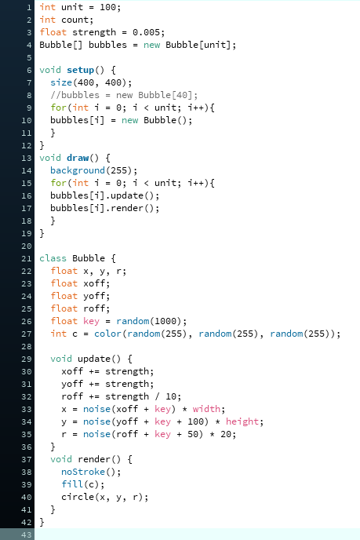
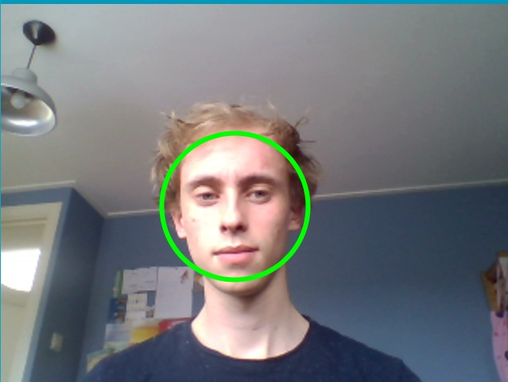
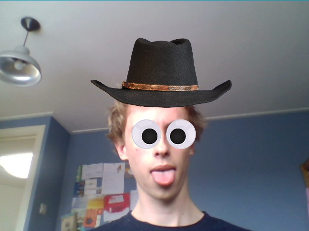
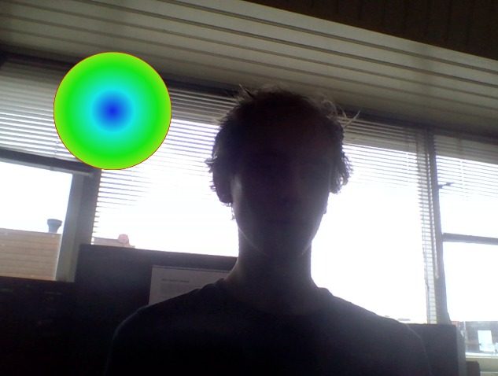
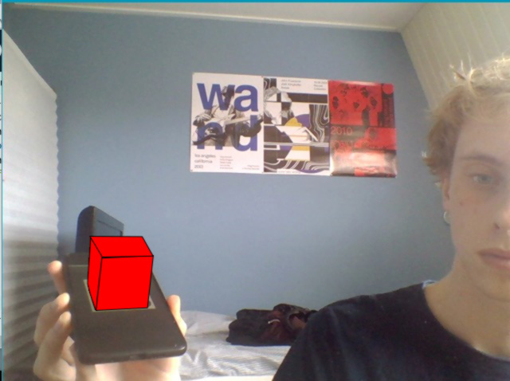

Deze workshop staat naast VR omgevingen ook in het teken van Processing. Processing is een programma waar ik weinig ervaring mee heb, maar wel goed begrijp. Ik ben redelijk vloeiend in het gebruik van P5.js, de JavaScript variant van Processing.
Voor de eerste opdracht heb ik mijzelf een beetje uitgedaagd. Ik weet van JavaScript hoe classes werken, maar heb ze zelf nog nooit in Java gebruikt. Daarom leek het mij leuk de ellipsen een object te maken die zo hun eigen leven leiden. De ellipsen bewegen op een willekeurige manier, en hun grootte en kleur ook.
Ik heb de code van assignment 1 aangepast om verschillende vormen te maken. Bij het initiëren van een object wordt gekozen wat voor vorm het wordt. Die wordt op zijn beurt geupdatet en gerendert.

Voor deze oefening maak ik eerst een vector aan voor de muispositie. Zo kan het programma ook nog draaien als er geen muis meer is, en blijft ie goed functioneren. Dit was in principe niet nodig, maar nu weet ik ook een beetje hoe vectors werken. Het tweede punt van de lijn wordt tevens willekeurig bepaalt via de noise() functie.

Het was even zoeken hoe ik alles werkend kreeg, maar dat zat hem vooral in de coordinaten en het activeren van de webcam op mijn laptop. Toen dat achter de rug was ging de oefening redelijk vlekkeloos.
Oe, wie zou het zijn?
De 2 voorbeelden deden bij mij erg moeilijk. De "brightest point" ging redelijk vanzelf, maar had een hele slechte tracking. Ik denk dat dit puur het gevolg is van mijn inadequate webcam. Ook de tracking van het tweede voorbeeld ging ongelofelijk moeilijk. Ik heb zo snel mogelijk een screenshot gemaakt toen ie 't 1 moment deed, dus dat is alles wat ik heb. In het eerste voorbeeld had ik een discobal gemaakt die als gradiënt animeerde.
 